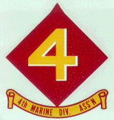
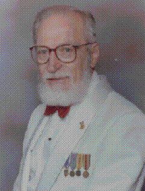

Today, 31 July 1993, is the 49th anniversary of my last day in combat. I decided to record as much detail as can be recalled of that day in 1944. It was the day a Japanese machine gunner's bullet finally had my number on it. Fortunately only one bullet had that distinction. And speaking of numbers, while I can still remember a number that has been very important to me, was my exclusive Marine Corps serial number. It was and still is 419,654. Today, it's been raining and I slept through the 10 AM hour, which is unusual, since retirement in 1984 my normal reveille is anywhere between 0630 & 0730 hours.
Then, at just about 10 AM, 31 July 1944, I remember vividly feeling that my arm had been smashed by the blow of an unseen double bladed axe as I was in the process of sitting down having just received the word to "Hold up." We had been pressing forward against lite opposition since about 0800 hours and were about 600 yards from Tinian Town, that was off to our right at 90 degrees. (Enfilade fire from the town at that time would have had disastrous effect on our lines).
I along with most members of my squad were suffering the ravages of that dreaded ailment "dysentery". Shortly after landing on Tinian, most of us came down with it, probably from tainted water that had been furnished to us. Normally our water was treated before distribution. Apparently some water had somehow failed to have been treated. When one has dysentery and the cramps start one does what one must do and quickly. Even though enemy activity had been light the day was terrible - for me.
As I hit the ground and cried out that I'd been hit, someone on my fire team, possibly John Dodson or Tony Fusco, called for the Corpsman and they began to help me get out of my pack straps and ammunition harness. A Corpsman was near by and got to me quickly. He saw that I was in great pain and that my left arm hung limp. He slit the sleeve of my jacket open to beyond the elbow to survey the damage, and with sulfa powder from my first aid pack emptied it on the inside of my forearm and wrapped the arm with the bandage also from my first aid pack. Then he gave me a shot of morphine (I think in the shoulder), wrote out a tag that he hung on my jacket. This took only a minute or less and he pointed me in the direction of the nearest aid station. I was asked "Can you make it on your own?" I thought I could and was on my way toward the aid station, away from the war for a little while at least. I did not know that this was the first leg of my trip back to the States.
Years later, at our reunion in 1988, Tony Fusco told me that he picked up my BAR and took over as the BAR of our fire team. He said some of the magazines in my ammunition belt had been shot up, were mangled and smoking and had to be discarded. As I made my way along the path to the aid station, the 1st squad, 1st Platoon of C/1/23 moved out to finish the job.
With each step my arm became heavier and my head lighter from the morphine. The aid station was not far and I made it on my own. By the time I got there I was quite drunk from the morphine. Corpsmen at the aid station saw me as I approached and came out to assist me. The first tab was removed from the tag our Corpsman had hung on me and removed the bandage from my arm to observe the wound. Finding that neither the sulfa nor the wrapping had covered the spot where the bullet had entered my arm, they applied sulfa powder on that area and rebound my arm.
There were two other wounded Marines waiting under the tree with tags hanging on them and I was told to join them, that in a short while we would be taken to the beach, as soon as their jeep returned. By now I was ready to collapse, sat down, leaned against a tree and apparently passed out. Sometime later someone was shaking me and telling me the jeep was here and we were to leave immediately. By now there were 5 of us. Two more Marines had joined our little group after I had fallen asleep. Lee Wagner, a Pvt also from C/1/23 had joined us. He had shrapnel wounds in his back. He sat next to the driver. I sat behind the driver. There were two on stretchers across the jeep's hood and another marine was in the back with me.
The driver said he'd try to get us to the hospital ship, that one was standing off shore but was scheduled to sail so we'd have to hurry to the beach where the hospital ship had a boat standing by. He told us we were pretty lucky to get on the hospital ship, if we got there in time. He abandoned the road such as they were and took off across fields that were very rough. Our morphine was beginning to wear off and the pain from bouncing in the jeep became unbearable. Some of us were yelling to take it easy, including Wagner. When the driver failed to heed our pleas by continuing at what we thought were at breakneck speed, Wagner grabbed his arm and lifted him from his seat. Lee told him to slow down or he'd throw him out and take over the driving. The driver slowed down to a crawl but the jogging even at slow speed caused excruciating pain to each of us.
When we approached the beach we could see no ship at all nor was there any sign of a boat party standing by. We realized we had missed the ship but since none could be seen on the horizon, it had undoubted left while we were still at the aid station. Our rush to get to the beach had been a painful waste of time. Our driver apologized, then informed us that we'd have to fly out and he'd take us to the temporary air strip. Now there was no need to rush and we made it to the strip by the smoothest route. Our driver headed for the group of jeeps that were assembled by a few tents. This was about 1430 hours that afternoon.
The walking wounded, which is the group that I was in, were ushered into one of the tents and were checked to see if we needed immediate attention. Periodically a DC-3 would land and the awaiting wounded were loaded and it would take off. How many times this happened before my turn came I don't know because we were given pain pills and I dozed off while waiting.
Also while waiting, the cramps from dysentery came back. It is real messy job when one has both hands and without the use of both and without adequate supplies, well one wishes he were dead rather than to carry on.
It was near dark when I was led to the DC 3 and helped aboard and down the steep runway between seats. Fortunately the flight to Saipan took only minutes and we were back on the ground, apparently at Aslito Airfield. Then a short ride in a 4x4 to the Sugar Mill. I never saw Lee again that night or after but heard he had been treated and returned to the company on Tinian and that he was KIA on IWO.
The Sugar Mill, that monument that had been our landing guide six weeks earlier had been cleared of machinery and rubble and converted into a field hospital. On entry into the building another tab was removed from my tag and I was taken to the second floor and assigned to a folding wood and canvas cot, given some APC pills for my pain and shown where the Head was. The room looked like a haymow without the hay. Three or four 50-watt light bulbs illuminated the entire floor, but barely. Resting was impossible. 50 to 100 cots lined the room, maybe more and who cared. Somebody occupied nearly all of them. Cries of pain, screams and swearing were constant throughout the night.
Sometime during that night, between 2 or 3 in the morning of 1 August 1944 a Corpsman with flashlight came for me and helped me to a much better lighted room on the main floor. There were doctors, orderlies, operating rooms, xray rooms and most things you'd find in hospitals. A doctor examined my arm, ordered an xray of the left ulna and when the xray was ready and checked out, ordered that my entire left arm be placed in a plaster cast. In due course I was taken back to my cot, given some more APC pills and told to try to get some sleep.
The cast was so heavy and uncomfortable in addition to the pain to the nerves in the arm that normal sleep did not happen but I dozed off occasionally. It was one of the longest nights I had experienced. After daylight my name was called and I was ordered to assemble out in front, where trucks were waiting to escort us to the airstrip to move us out of the combat zone.
At the airstrip, there was a lot of activity with Flying Boxcars and DC 3s coming and going but we were taken to a shaded area near a tent city and told to wait. There they forgot about us. We were there for several hours and the grumbling among us got pretty loud and nasty. We had been offered no food, not even rations so several of us entered the tents looking for someone in authority and/or food. We found one tent was a mess tent. There messmen were cleaning the galley and told us all they had was some leftover oatmeal and we were welcome to have it but there was nothing to eat it from. The fly boys that ate there had to provide their own mess kits. We finally persuaded some ground crew personnel to lend us their mess kits so we could get some of that oatmeal. They came to our rescue and we ate that slightly warm oatmeal. It tasted wonderful. We appreciated their help and told them we were grateful after dunking the mess kits in the boiling pots that had been kept hot to clean mess gear and returned clean mess gear to the sympathetic members of the Air Detachment.
Mid-afternoon came and so did the plane to take us off Saipan. My name was one of those called off and I was told to board the awaiting aircraft, a Flying Boxcar. Inside, there were no seats but stretchers were attached to the ribs of the plane's outer frame. The center of the plane had a long row of wooden crates secured to the floor. I was helped to lay down and stretcher bearers brought in those who could not walk on their own. When fully loaded we left Saipan without seeing it slip away.
The first leg of our flight was to the Island of Eniwetok, where we landed apparently for service to the plane. The Island was of white phosphorous sand and trifling hot. All the wounded were taken off the plane and placed in the shade under the wings of the big bird. It was so hot outside but hotter even in the plane so we were pleased to be permitted to sit in the shade. And there we were given sandwiches and as I recall lemonade to feed our thrist. After an hour or so all was ready to resume our flight and we were all returned to our hot uncomfortable bunks. Once airborne it was much better. While still daylight we made our designated landing. It was at the Island of Kwajalein, in the Kwajalein Atoll, about 60 nautical miles southeast of Roi Island. Here the Air Force had established a hospital for short term convalescent care. It was beautiful. Cots with white sheets and pillows. My dirty uniform was taken from me. An orderly helped me to bathe, don clean pjs and fed before retiring for the night.
2 August 1944 was a beautiful day. Nurses, young, beautiful and helpful were there to make us as comfortable as humanely possible. Dysentery was still there to contend with and a pretty young nurse was there to treat me. At first I was so embarrassed. She, I think was no older than I. She told me not to be embarrassed that she was there to help and there wasn't anything she hadn't seen before. "Lean across the treatment table, please and I'll do what I can for you", she told me. With rubber gloves she slid my pj bottoms down to where she could apply the purple ointment that had been prescribed for painting the rectum and surrounding derriere. It was good to nap and eat hot food and have someone attend to my aching arm.
After one full day of rest and care, on the morning of 3 August 1944 I was told that my time was up as far as staying at the Kwajalein Air Force Hospital and that I should expect to be notified when everything was ready for my departure. I was told Kwajalein Island was shaped like the new moon, about one mile across at the narrow center and ten or fifteen miles long.
This is getting to be much longer than I had thought it would be but I must carry on. Still quite early in the morning I was summoned and bid farewell to those that remained there. Waiting at the airfield was a Constilation, a big 4 engine transport plane. Inside were male and female stewards who brought us lunch and boullion soup for a snack in flight. We were in the air nonstop for many hours before landing in the South Pacific at the Island of Guadacanal, where two years before, the 1st Marine Division fought to the death to wrest the island, with it's airfield from the Japanese forces and hold it.
The travel from the airfield to the hospital was on magificent new blacktop roads that were elevated several feet over the level of the adjoining land and undergrowth. It was a sight to behold. The Engineers and Seabees had made a wonderful restoration of the earlier battle fields.
Written by Orvel Johnson
Maintained on web site by Rowland Lewis
Last Modified 07/17/2000